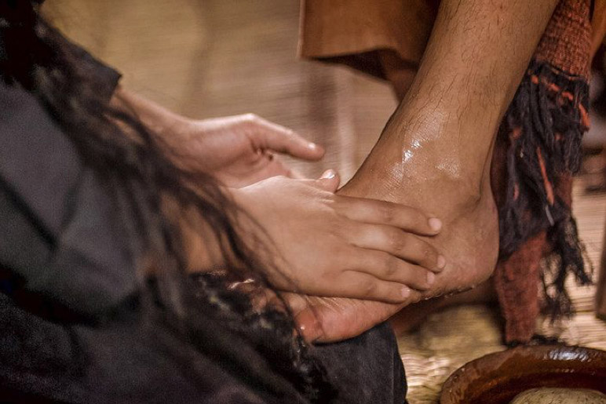

Leitura Orante
Leituras do Dia
Quarta-feira da 24ª Semana do
Tempo Comum
Santos Cornélio e Cipriano - Papa e
Bispo Mártires
(Verde -Ofício do dia)
17 de setembro de 2020


Oração do dia
Ó Deus, que em são Cornélio e são Cipriano destes ao vosso povo pastores dedicados e mártires invencíveis,
fortificai, por suas preces, nossa fé e coragem, para que possamos trabalhar incansavelmente pela unidade da
Igreja. Por Nosso Senhor Jesus Cristo, Vosso Filho, na unidade do Espírito Santo.
Leitura: 1 Coríntios 12,31-13,13
Irmãos, 31aspirai aos dons mais elevados. Eu vou ainda mostrar-vos um caminho incomparavelmente superior. 13,1Se eu falasse todas as línguas, as dos homens e as dos anjos, mas não tivesse caridade, eu seria como um bronze que soa ou um címbalo que retine. 2Se eu tivesse o dom da profecia, se conhecesse todos os mistérios e toda a ciência, se tivesse toda a fé, a ponto de transportar montanhas, mas se não tivesse caridade, eu não seria nada. 3Se eu gastasse todos os meus bens para sustento dos pobres, se entregasse o meu corpo às chamas, mas não tivesse caridade, isso de nada me serviria. 4A caridade é paciente, é benigna; não é invejosa, não é vaidosa, não se ensoberbece; 5não faz nada de inconveniente, não é interesseira, não se encoleriza, não guarda rancor; 6não se alegra com a iniquidade, mas regozija-se com a verdade. 7Suporta tudo, crê tudo, espera tudo, desculpa tudo. 8A caridade não acabará nunca. As profecias desaparecerão, as línguas cessarão, a ciência desaparecerá. 9Com efeito, o nosso conhecimento é limitado e a nossa profecia é imperfeita. 10Mas, quando vier o que é perfeito, desaparecerá o que é imperfeito. 11Quando eu era criança, falava como criança, pensava como criança, raciocinava como criança. Quando me tornei adulto, rejeitei o que era próprio de criança. 12Agora nós vemos num espelho, confusamente, mas, então, veremos face a face. Agora, conheço apenas de modo imperfeito, mas, então, conhecerei como sou conhecido. 13Atualmente permanecem estas três coisas: fé, esperança, caridade. Mas a maior delas é a caridade. – Palavra do Senhor.
Salmo Responsorial: 32(33)
Feliz o povo que o Senhor escolheu por sua herança!
Dai graças ao Senhor ao som da harpa, Na lira de dez cordas celebrai-o! Cantai para o Senhor um canto novo, Com arte sustentai a louvação!
Feliz o povo que o Senhor escolheu por sua herança!
Pois reta é a palavra do Senhor, E tudo o que ele faz merece fé. Deus ama o direito e a justiça, Transborda em toda a terra a sua graça.
Feliz o povo que o Senhor escolheu por sua herança!
Feliz o povo cujo Deus é o Senhor, E a nação que escolheu por sua herança! Sobre nós venha, Senhor, a vossa graça, Da mesma forma que em vós nós esperamos!
Feliz o povo que o Senhor escolheu por sua herança!
Evangelho: Lucas 7,31-35
Naquele tempo, disse Jesus: 31“Com quem hei de comparar os homens desta geração? Com quem eles se parecem? 32São como crianças que se sentam nas praças, se dirigem aos colegas, dizendo: ‘Tocamos flauta para vós e não dançastes; fizemos lamentações e não chorastes!’ 33Pois veio João Batista, que não comia pão nem bebia vinho, e vós dissestes: ‘Ele está com um demônio!’ 34Veio o Filho do Homem, que come e bebe, e vós dizeis: ‘Ele é um comilão e beberrão, amigo dos publicanos e dos pecadores!’ 35Mas a sabedoria foi justificada por todos os seus filhos”. – Palavra da Salvação.
Leituras do mês
TAGS
missao Amazonia evengel covid-19 indigenas novica papa francisco
Destaques
Província Stella Matutina
Rua São Benedito, 2146 - Santo Amaro - São Paulo - SP |
Tel. (11)
5547-7222


Província Spiritus Divinae Sapientiae
Rua Arnaldo Janssen, 320 - Cara-Cara - Ponta Grossa - PR |
Tel. (42) 3326 4091